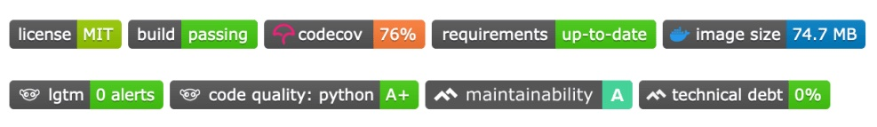

Level Up your R Package
Workshop taught at International Statistical Ecology Conference 2020
R
software
RSE
These notes accompany a course taught by Nick Golding and Saras Windecker at the International Statistical Ecology Conference, June 2020, entitled “Level Up your R Package”.
When do we create an R package?
- to more easily reuse code
- to make it accessible to others, either collaborators or wider audience
- to present with a finished project, to ensure it’s reproducible
- to formalise tools you use often
Setting up a basic package
why usethis?
This package makes is designed to make project setup and development easier. You can read more information here. devtools::install_github("r-lib/usethis") usethis::create_package(path-to-new-package)
add a license
There are many different licenses to choose from! A discussion of these can be found here. usethis has a handy shortcut to add the MIT license. usethis::use_mit_license("YOUR NAME")
Documenting functions
To make your functions available to a user, they need to have documentation. Add documentation using these steps:
- Add Roxygen skeleton using Code > Insert Roxygen Skeleton
- Fill in fields with required information. More detail and common tags can be found in the Devtools cheatsheet. NOTE: external facing functions need the
@exporttag. - “Document” the documentation so it creates a
.Rdfile in theman/folder, either using Build > Document,devtools::document(), or a shortcut (CRL + SHIFT + D for windows or CMD + SHIFT + D on Mac).
To use these newly documented functions, make sure to re-install the package.
NOTE: redocument after changing any Roxygen headers! The NAMESPACE file updates only when you Document.
What makes good documentation?
- examples
- parameter descriptions
- description of what is returned
- type of R value that each parameter should be
- which function arguments are optional
- default arguments
- clear description of arguments
- what else you can do with the object this function returns
Reviewing
TIP: best way to get better at writing packages, is to start reviewing them!
Notes from reviewing the user interface of our initial function:
- input arguments repetitive and related to several different steps
- default prediction type, without showing two options
- input data and prediction data both as arguments
- only returns prediction, not model. cannot plot or summarise later.
- have to re-run model if want to predict to different data.
Reviewing usability:
- not detailed examples
- no example data to play with
- unclear how to interpret the plots
- unclear error messages
- unclear guidance on input format
Level up your user interface
TIP: use consistent naming within your package! see
Arguments
Try to make argument choices explicit. To add a default, set it in the function arguments like so argument = default. To provide specific options for the inputs, add them like so argument = c(option1, option2). You can then check that one of the possible input options was chosen using argument <- match.arg(argument) at the top of the body of the function.
S3 Methods
S3 methods are default functions associated with a particular type of object, such as plot functions, summaries, and predict functions for stats objects. More information can be found here.
- You need to make sure the object you want to pass into your S3 function is assigned a specific class. In our example, we gave our object class
brve. NOTE: our class name doesn’t need to match the package name! It can be whatever you like. NOTE: if we change it to only have our new class, it loses its previous classes! So best to add the new class. ieclass(object) <- c('brve', class(object)). By putting our class first, that becomes the default. - Adapt S3 functions to your requirements, and rename them, for example
summary.brve()for an object of class brve specific summary. TIP: begin the with help file for the generic method you are trying to build off (for ex?predict.glmfor predict S3 methods), this will help you understand the structure of the inputs. - S3 methods have special argument names! Check out an equivalent S3 method (ex.
head(predict.glm )to check what they should be called. - Document your function. When you document, Roxygen will automatically know it’s an S3 method if you name it right! Once you document, you can see this added in a special way in the NAMESPACE file. NOTE: even though the S3 methods are technically exported, they are not shown as available functions! NOTE: your S3 method will be named something like predict.brve but if you are applying it, then you only need to call
predict()because R will see that it is an object of class brve, and apply the correct method to it.
internal functions
Smaller functions that do individual things are often easier to work with and test. Two main kinds of internal functions.
The first may be functions used inside another function. These would be best placed in the same file, underneath the function they are called in. Remember these still need their own Roxygen headers and documentation.
The second are internal functions that are used across multiple functions in the package, we would tend to place in a separate helpers.R file.
Internal functions do not need to be seen by the user, so you can omit the @export tag in the Roxygen header.
coding style
- fail early! Meaning add error statements that check for correct input and other information for the user early on. That way as little code as possible is run before it is stopped.
- avoid too many nested if statements that reduce readability. More tips on how to do this are here: Code Smells and Feels by Jenny Bryan.
- long lines of code are not very readable! Keep em tight.
- return statement only necessary if the object to be returned is not obvious.
adding data
Adding data to a package is a great way to provide the user with something to play with while learning how to use the package, and also to provide a template for the format the data should be in.
Add data using usethis::use_data(dataframe). Where dataframe is an object in your environment. This code adds the data as an .rda file to a new folder called data/. Then you need to add documentation for this data in a data.R file in the R/ folder, instructions here.
testing
Tests check that your function does what you expect it to.
- regression test: to check if something you changed broke something else
- unit test: test a specific bit of code (inside the function, not necessarily the whole function as the user would call it)
- integration test: testing how all the bits of code fit together. Matching what a user would do at the higher level of organisation.
- create baseline files you’ll need with
usethis::use_test("name_for_test_file") - write the test code in the file, located in
tests/testthat/test-name_for_test_file.R. - it is useful to organise and name your tests in logical relation to the function they correspond to.
-
expect_error()is nice because it allows you to specify not just that it should error, but which error in particular you expect a user to receive. - more info here.
TIP: if you want to write and run tests interactively, you will likely want to be able to access your internal functions to test them. To load them into your environment to test them, you could use devtools::load_all() which will bring all your functions into your environment.
NOTE: stop() v. tests. Stops relate to checks to warn the user that something is wrong with what they’ve input. The test code is related to whether the code itself is working correctly.
code coverage
covr::package_coverage() to check what proportion of the code in your package is tested.
continuous integration
Takes your code and tests and runs them on an external server. Also helps facilitate testing on different operating systems/versions of R.
Try out usethis::use_github_action_check_release() to set up CI. To learn more about GitHub Actions, check out this ebook.
other
- lintr for style checking!
lintr::lint_package() - spell check with
usethis::use_spell_check() - git resources
- get an automated review of your package with
goodpractice::gp() - developer’s guide.
TIP: :: is a way to access an exported function from a package. ::: accesses an internal, ie not exported one.
Good luck!